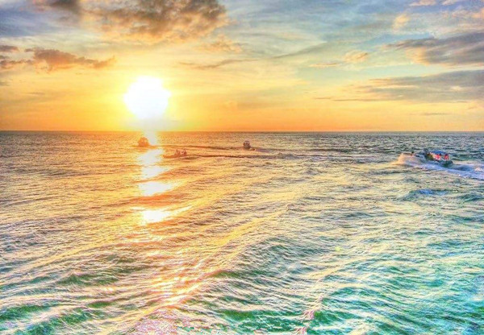

碧海.枸杞岛丨组团探秘东海明珠 捕鱼海钓一起上


各地-小洋山-枸杞岛-小洋山-各地
- 篝火露营
- 海岛海钓
3天2夜
3.5小时
阳光沙滩，美味海鲜任你挑
篝火晚会，嗨翻全场
捕鱼海钓，增强团队凝聚力
篝火晚会，嗨翻全场
捕鱼海钓，增强团队凝聚力

【产品亮点】
枸杞岛的海被誉为上海周边最蓝的大海，来到这个原始的小岛上，最大的乐趣莫过于与海同乐，在枸杞岛最大的沙滩去游泳、戏水、玩沙，和团队一起出海捕鱼，一起篝火狂欢，享受海鲜大餐，在欢乐的时光中建立深厚的友谊，相互的默契，团队的凝聚力。
枸杞岛的海被誉为上海周边最蓝的大海，来到这个原始的小岛上，最大的乐趣莫过于与海同乐，在枸杞岛最大的沙滩去游泳、戏水、玩沙，和团队一起出海捕鱼，一起篝火狂欢，享受海鲜大餐，在欢乐的时光中建立深厚的友谊，相互的默契，团队的凝聚力。

【线路介绍】
枸杞岛就像天堂，这里的海水清澈纯净，蓝天碧波，水天相连，一望无际，养殖贻贝的白色浮子在阳光照耀下闪烁着点点银光。渔舟在碧波荡漾中穿梭，构成了一幅美丽的海上牧场图。当踏上枸杞岛的一刹那，时间仿佛慢了下来，去大王沙滩踏沙看海；在小西天赏日落；山海奇观等待日出，静坐东崖绝壁听涛赏景，或者去渔家吃肥美的海鲜吃到肚撑才算是不枉来一次枸杞岛。
枸杞岛就像天堂，这里的海水清澈纯净，蓝天碧波，水天相连，一望无际，养殖贻贝的白色浮子在阳光照耀下闪烁着点点银光。渔舟在碧波荡漾中穿梭，构成了一幅美丽的海上牧场图。当踏上枸杞岛的一刹那，时间仿佛慢了下来，去大王沙滩踏沙看海；在小西天赏日落；山海奇观等待日出，静坐东崖绝壁听涛赏景，或者去渔家吃肥美的海鲜吃到肚撑才算是不枉来一次枸杞岛。

Day1 各地-小洋山-枸杞岛
6:30 客人指定地点集合上车，前往小洋山，途中教练进行破冰仪式，一路欢声笑语，开始我们美妙的海岛之旅。约一个半小时来到小洋山沈家湾码头，我们购票上船，一路海景无限，轻轻的海风吹拂着你的脸庞，带着她独有的咸咸的味道，要注意一个奇妙的变化哦！海水颜色在慢慢由黄转蓝。



18:00 返回住宿地享受海鲜大餐。美味新鲜的海鲜面前，就不要注意神马形象的了，尽情的虎吃海吃才是真理！20:30 吃完海鲜大餐之后，如果想要在海边多玩一下的，可以自行活动，尽情的在海边撒欢吧！注意安全！实时回酒店休息

今天大家可以睡到自然醒，自由的海岛慢生活开始了，大家可以一起约着去“绿色童话世界”荒村（自愿前往），感受只有在动画片里才会出现的童话世界。 【无人村】站在村口的山上可以俯瞰整个村子，蓝天、山坳、大海相映成趣，加上将村子缠绕的绿树和灌木，美景直扑进眼中。由于长期没人，废弃的房屋被藤蔓和爬山虎缠绕，与大自然融为一体，可谓是无心插柳柳成荫，无意间创造了这样一个童话世界般的美丽村庄。
午餐后，想出海钓鱼的跟着船老大一起出海钓鱼。枸杞岛的鱼类资源可丰富了，想海钓的朋友，就大显身手吧，团结就是力量，一定要为晚上的烧烤捕好多好多鱼。海钓的鱼带回在宾馆餐厅可以加工。
17:00 晚上篝火晚会！海鲜烧烤大餐搞起来！围着篝火尽情狂欢吧！还有美味的烧烤海鲜助兴，不嗨都不行，唱歌、跳舞、游戏，尽情浪，海上明月当头之时，听着海风，看着星星，谈谈心，美就是别样的趣味，拉近心与心的距离。

Day3 枸杞岛-小洋山-各地
4:30 太阳早早来看我们了，朋友们可不能偷懒，早起组团前往山海奇观看日出，坐在岩石上，看着太阳在海里慢慢的升起；让我们一起见证这希望之光普照大地 12:00 在餐厅吃完午饭，我们就要收拾好行李返程，回到我们温馨的家！
【注意事项】
1、背包：需要两个，一个用来托运装备（50升左右），一个 用来徒步过程中背负（30升左右）
2、睡袋：睡袋（务必达到-20度）
3、鞋袜：建议高帮防水鞋，且鞋表面无网眼，厚袜子不少于2双，鞋脚要充分磨合
4、服装：速干排汗、抓绒、冲锋衣，内衣两套，外装换洗一套
5、手杖：建议2只，可以节省不少体力，同时保护膝盖（建议搭配护膝使用）
6、帽子：带沿帽为佳、或者头巾，可以防风、防晒
7、太阳镜：镜片最好能防紫外线
8、润唇膏、防晒霜
9、头灯：一定要充好电和备用电池
10、水壶、水瓶、水袋均可
11、照相机选备、手台选备；相机一定要做好防沙措施
12、魔术头巾：两块，可以擦汗防沙
13、餐具：碗筷、汤碗及汤勺
【出行守则】
1，健康提醒：根据活动的难易程度，评估您是否适合参加户外运动。
2，安全原则：户外活动中听从领队指挥。正确使用户外用具及防护用具。
3，适合年龄: 7周岁-60周岁 ，如有携带年龄不符合的成员，请慎重参加户外活动。
4，强调团队精神，互帮互助，女士优先原则，严禁个人英雄主义
5，自备及租用物品由各人自行背负；公用物品由每位团员分担背负
6，如发生堵车、抛锚、迷路，台风及其他等不可控制的意外情况，请大家谅解，并能协助领队一起解决
7，爱护环境，注意环保，森林中严禁明火，全部垃圾带出景区，野外如厕远离水源
【费用说明】
1，参考价格是按照活动标配的物资及工作人员计算，团队定制时住宿及用餐标准自调
2，用餐均以桌数为单位计算。
3，团队活动统一购买户外运动高风险意外险
1、背包：需要两个，一个用来托运装备（50升左右），一个 用来徒步过程中背负（30升左右）
2、睡袋：睡袋（务必达到-20度）
3、鞋袜：建议高帮防水鞋，且鞋表面无网眼，厚袜子不少于2双，鞋脚要充分磨合
4、服装：速干排汗、抓绒、冲锋衣，内衣两套，外装换洗一套
5、手杖：建议2只，可以节省不少体力，同时保护膝盖（建议搭配护膝使用）
6、帽子：带沿帽为佳、或者头巾，可以防风、防晒
7、太阳镜：镜片最好能防紫外线
8、润唇膏、防晒霜
9、头灯：一定要充好电和备用电池
10、水壶、水瓶、水袋均可
11、照相机选备、手台选备；相机一定要做好防沙措施
12、魔术头巾：两块，可以擦汗防沙
13、餐具：碗筷、汤碗及汤勺
【出行守则】
1，健康提醒：根据活动的难易程度，评估您是否适合参加户外运动。
2，安全原则：户外活动中听从领队指挥。正确使用户外用具及防护用具。
3，适合年龄: 7周岁-60周岁 ，如有携带年龄不符合的成员，请慎重参加户外活动。
4，强调团队精神，互帮互助，女士优先原则，严禁个人英雄主义
5，自备及租用物品由各人自行背负；公用物品由每位团员分担背负
6，如发生堵车、抛锚、迷路，台风及其他等不可控制的意外情况，请大家谅解，并能协助领队一起解决
7，爱护环境，注意环保，森林中严禁明火，全部垃圾带出景区，野外如厕远离水源
【费用说明】
1，参考价格是按照活动标配的物资及工作人员计算，团队定制时住宿及用餐标准自调
2，用餐均以桌数为单位计算。
3，团队活动统一购买户外运动高风险意外险